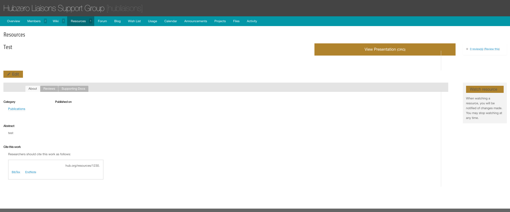

Hub managers
Super Groups
A super group is a hub group with a web space of its own. It keeps everything an ordinary group has — members, forum, wiki, blog, files — and adds a directory on the server holding its own template, its own pages, its own modules, optionally its own components, and its own database. Content in a super group may contain PHP and JavaScript, which is stripped out of an ordinary group's pages.
Super groups are for the hub's own project teams and partners, not for anything a visitor can create. Only an administrator can make one, and the code inside one runs with the hub's full privileges.
Writing the template itself is a developer task. See Super Groups in the developer book for the templating system, page templates, macros, PHP pages, databases, migrations and components, and Super Groups with GitLab for the repository workflow.
Creating a super group
A group's type can only be set from the administrator interface. Groups created by users on the site are always ordinary hub groups.
- Go to Users → Groups.
- Select New.
- Set Type to Super.
- Fill in the Alias and Title, and a Group Logo if you have one. The alias becomes both the group's URL segment and the name of its directory and database, and cannot be changed later.
- Under Membership, choose a Join Policy, and give the Credentials text if the policy is Restricted. Clear Membership Control if this group's membership is managed elsewhere.
- Under Access, choose a Discoverability: Visible lists the group in searches, Hidden keeps it out of them.
- Set Approve to Approved and Published to Published. Groups created here are not approved automatically.
- Select Save & Close.
On save the hub does the rest, in
_handleSuperGroup():
- Creates the group's directory under the Upload path from the component
options,
/site/groupsby default, named after the group's numeric ID. - Copies the active site template's
super/directory into the group'stemplate/directory, if that template ships one. - Copies the default skeleton from
core/components/com_groups/super/defaultover the top, without overwriting anything already there. That gives the group itstemplate/,components/,config/,macros/,migrations/,uploads/andlanguage/directories, and a base template with its own error and login pages. - Sets the directory to mode 2770 and changes its group ownership to the
Super Group Group Owner option,
access-contentby default. - Creates a database named
sg_<alias>, if the hub's database account holds a grant onsg\_%. If it does not, the screen warns Hub is missing super group database creation permission and carries on without one. - Writes the group's
config/db.phpfrom/etc/supergroup.conf. If that file is missing you get Unable to load super group config and the group has no working database connection. - Connects the group's repository, if Repo Management is on. That step
only runs when
application_envis a production environment.
What a super group can do that an ordinary group cannot
| Capability | Where it lives |
|---|---|
PHP and <script> in group pages and modules |
The page or module content itself |
| Standalone PHP pages | pages/<name>.php in the group directory, served at /groups/<alias>/<name> |
| Its own components | components/com_<name>/<name>.php, with an optional router.php. Requires the Super Group Components option |
| Its own template | template/ in the group directory |
| Its own database | sg_<alias>, configured by config/db.php |
| Its own language strings | The group directory is searched first when a group plugin loads its language file, so a super group can rename or reword anything a group plugin says |
| Modules on group pages | The Manage Modules tab, which ordinary groups only get if the Pages option Modules is on |
| Resources shown in the group's own template | Automatic; see below |
An ordinary group has PHP and <script> removed from its page content
before rendering. The one exception is the per-group Trusted content
page setting on the group's admin form, which suppresses the stripping for
that group without making it a super group.
Approval of pages and modules
Because a super group's content executes, it is not published on the author's say-so.
When a page version or a module is saved and its content contains <?,
<?php or <script, the hub marks it unapproved and emails everyone listed
in the Page Approvers option of the com_groups configuration. Until it
is approved, visitors get the "not approved" placeholder instead of the page,
and the module shows as Pending approval in the module list.
To approve one:
- Go to Users → Groups.
- Select the group's page count. The Pages Needing Approval table sits at the top of the screen; the Modules entry in the sub-navigation carries the same table for modules.
- Read the submission. View Raw shows the source as written, Edit opens it, and Render Preview shows it as a visitor would see it.
- Run the two checks: Check for Errors and Scan Content.
- Select Approve.
Render Preview and Approve stay closed until both checks have been run — the screen says You must check for errors and scan before you can approve. Approving sends a second notification, this time to the group's managers.
Managing modules from the site
Modules are managed by the group's own managers, on the site.
- Open the super group's home page.
- In the group toolbar, open More options and select Manage Group Pages.
- Select the Manage Modules tab.
The tab is present for every super group. For an ordinary group it appears only when the Pages option Modules is on.
Filter the list by module position with the menu in the toolbar, or type in the search box beside it.
Adding a module
- Open Manage Modules and select New Module.
- Give the module a Title and its Content. Both are required. In a super group the editor accepts PHP and script tags, and opens in source mode when the content already contains either.
- Under Menu Assignment, choose On all pages or pick the pages the module belongs on.
- Under Publishing, set the Status.
- Under Module Settings, set the Position and the Ordering within that position.
- Select Save Module.
Publishing, unpublishing and deleting
In the module list, select the unpublished icon to publish a module, or the published icon to unpublish it. Manage Module opens the module for editing, and its drop-down also offers Publish, Unpublish and Delete.
Reordering
Ordering is a property of the module, not a drag on the list.
- Open Manage Modules and select Manage Module on the module you want to move.
- Change Ordering under Module Settings.
- Select Save Module.
Resources shown in the super group's template
When a resource is opened through a super group's Resources tab, the
group plugin runs the com_resources controller itself and renders its view
inside the group's page, so the resource keeps the super group's navigation
and styling instead of switching to the site template. The behaviour is
tested on the group's type and applies to super groups only.

Known gaps
- The super group's
error.phptemplate is copied into the group directory and the hub still checks for it, but the code that installs the custom error handler is commented out. A super group therefore gets the site's error pages, not its own.
Rewritten and checked against 2.4-main @ 123ea53b14 on 2026-09-09.